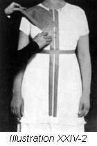

1926—The New-Way Course in Fashionable Clothes-Making
Lesson 24—The Dress Form
The New Home-Made Dress Form (Illustrations 24-1, 2, 3, 4, 5 and 6)
You are now going to learn something that has never been taught in any dressmaking course before. You are going to learn how to fit your own figure, without any outside aid whatever, without a dress form or a model lining. An ordinary shirt, a little gummed paper, and a little work and time—and you have before you a duplicate of your own figure with every little line and curve just exactly where it ought to be!
This new way of fitting the figure, makes it easy for everyone in the family to have a perfectly-proportioned form of their own. There can be one form for grandmother, another for mother, and still another for the young miss who seems to require so many new clothes for school. And when this young miss grows up suddenly, almost overnight, why a brand-new form can be made in no time at all!
First we are going to tell you exactly what materials you need in the construction of the home-made form. Then we are going to tell you briefly how it is made. And finally we are going to give you carefully worked-out, step-by-step directions which will enable you to make the form without any trouble whatever.
Materials Needed
Buy an inexpensive, tight-fitting, knit undervest with high neck and short sleeves. Be sure that this shirt is a very snug fit—size 36 is large enough for a figure with a 42 bust. It may be of cotton gauze in any weight, but be sure that it is long enough to extend below the fullest part of the hips. If the shirt is very long, cut a piece off the bottom to be used as a collar foundation. If not, buy a piece of muslin to serve this purpose.
You will need also a large roll of gummed paper one-half to one inch wide. Ask for 50 lb. quality gummed paper at your stationery store. Have also a piece of cardboard about eighteen by twenty-four inches, a water-container and sponge, a pencil, needle and thread, scissors, yardstick and tape line. A wash-basin and towel should be handy. Keep all these materials on a table near you so that the work may progress rapidly without stopping constantly to search for something that is needed.
Making the Form
The person for whom the form is being made must stand—and stand perfectly still and erect—therefore the work must be done quickly. For this reason it is always best to have two or three people to help with the making of the form. However, if only one person is available, the work can progress just as smoothly, if not as rapidly.
The tight-fitting vest is worn over the underwear. The model for whom the form is being made should wear comfortable shoes and she should see that her underclothing is smooth and well-fitting.
- Before anything else, cut off the buttons from the undervest, also the buttonhole strips, and sew the opening together.
- With tape measure, take the measurement of the model's waist-line and record it for future reference
- Unroll the gummed paper and cut half of it into small strips, six to eighteen inches. Cut the ends diagonally.
- From the other half of the roll, cut four longer strips for the long lines of center front and center back and one strip long enough to encircle the waist.
- Take this last-mentioned strip and paste it around the waist to form a tight belt. Use your sponge and water-container to dampen the gummed paper
- Paste a strip vertically on each side of the "belt," one-eighth of an inch from the center line of front and back. (See Illustration 24-2.)
- Quarter-inch spaces will be left down the front and back. They should be left partly uncovered so that it will be possible to cut through them easily.
- Now paste strips of gummed paper over the entire vest except the quarter-inch spaces mentioned. Let these strips overlap each other from one-half to two-thirds the width of the strip. Be sure that they are smooth and even, and that they are pressed firmly in place.
- The person upon whom the form is being made should now hold her arms away from her sides, resting the palms of her hands on the lower part of the hips. The form should be extended to about midway down the upper arm, the sleeve of the vest being covered with the gummed paper.
- Now add a second layer of paper, placing the second strips at an angle to the first. Continue adding layers of the gummed paper until the form is firm enough to hold its shape.
- If the shirt has no collar attached, cover the neck with a piece of material fitting it tightly and attaching it to the form with gummed paper. This collar foundation should be covered with strips one-half inch wide, placed perpendicular to the neckline. They should be allowed to extend one or two inches below the neck-line.
- Now you are ready to mark the hip-line. With your yardstick, mark it so that it will be an equal distance from the floor all around. (See Illustration 24-3.) Measure the distance from the hip-line to the floor and record this measurement.
- You have now reached the point where it is necessary to cut the form in half and remove it from the body. To be sure that you will be able to join the parts correctly, after having cut and removed them in halves, draw short lines at intervals across the center front and back of the form. These lines will serve as a guide later in attaching the halves again.
- Through the quarter-inch spaces left uncovered on the center front and center-back of the form, cut with sharp scissors and remove the halves carefully. Cut along the marked hip-lines. (Illustration 24-4.)
- If you want to be perfectly sure that your form is strong and firm in all parts, hold first one half and then the other up to the light. This will reveal the weak, thin spots and you can reinforce them with additional layers of gummed paper.
- Measure the waist-line on both halves of the form. If you find that the waist measure is larger than the recorded waist measure, cut a strip equal to one-quarter of the difference from each side of the front and back.
- Join the halves of the form together, using short strips of gummed paper. Watch the pencil marks and see that they correspond before joining the halves together. The center lines may be reinforced with vertical strips of gummed paper. (Illustration 24-5.)
- Trim the edges of the neck and arms and bind them with short strips of the gummed paper, one-half inch wide. This should be done neatly and with a regard for wear-resistance. (See Illustration 24-6.)
- Your form is now finished. To make a base for it, place it upright on the piece of cardboard and trace around the bottom of the form. Cut and fit into the bottom, attaching with short strips of the gummed paper. (Illustration 24-7.)
- If you wish, you may add a good coat of shellac to the outside of your form after it has been entirely put together. This gives a nice finish to the form and adds considerable strength to it.
- If you use this form in the fitting of waists, it may stand on the table. However, if you wish to use it in fitting dresses, make a stand for it. Have a carpenter saw a piece of wood the shape and size of the cardboard base and attach it to a strong vertical stick supported by cross-pieces. This gives a good solid foundation for your form.
Many students find the home-made form particularly valuable in the making of very dainty silk and cotton frocks. They use their padded and fitted form for coats, tailored dresses and dresses of heavy cloth, but use their home-made form when they make garments of very fine material. Even if you do not use your "fit-to-the-figure" form, however, you should know how to make it. For, after all, aren't you planning to be a skillful, accomplished home clothes-maker—and as a skillful clothes-maker isn't it necessary for you to know all there is to know about sewing?
This is your last lesson in Book III. It has been a very valuable and important book of lessons and we hope that you have mastered each point thoroughly. Perhaps you have not found the lessons on patterns and the making of model linings as interesting as some of the future lessons will be, but you must remember that the use of patterns and the dress form is one of the most important parts of clothes-making — the foundation, in fact, upon which all the making of attractive clothes is based. Determine that you will not conclude this book, will not even attempt to answer the examination questions, until you have reviewed all the lessons and satisfied yourself that you have completely mastered them.
As for the home-made form, make up your mind right now that you will not close this book until you have made an exact duplicate of your figure!
The above photographs and directions for making the Home-made Form are from the Home Economics Department at Ohio State University.
Making the Chemise
You are now going to make a chemise. If you follow the directions carefully, you will have a delightful little chemise that you will be proud to say you made yourself.
On the envelope in which the pattern is enclosed, you will find a cutting guide. Open your pattern, press the parts and identify each part. You will find that there are only two parts to this chemise pattern—half of the front and half of the back. On the back portion write "back" and on the front portion write "front" so that you will not have to refer back to your envelope whenever you want to identify them.
Your material should be pressed and folded lengthwise through the center. Lay the material smoothly on the table. Place the back of the pattern on the material with the center of the back on the fold. You will notice that on the cutting chart, the shoulder section of the back extends up to the curve at the bottom of the front. It is necessary to place your material in the manner mentioned in order to cut the garment out of the material you have.
Now take your large cutting scissors and cut the garment according to the pattern. Be very sure that all notches and construction points are marked before the pattern is removed. Mark perforations with tailor's chalk. Proceed with the making of the chemise according to the following directions.
- Baste the underarm seams according to the notches on the pattern, taking in the exact amount that has been allowed for seams. The shoulders on this chemise are not seamed but left open and finished and fastened with button and buttonhole.
- Use the French seam for the underarm seams.
- The armcye and neck are to be bound. Cut your bias bindings as taught in an early lesson of the course and use your binder attachment on your sewing machine to apply the binding. The binding of the straight and curved edges is taught in Lesson 9.
- The bottom of the chemise may be hemmed or bound. If you decide upon a narrow hem, you should have no trouble in using your hemmer and sewing machine to accomplish this work in a short while. Of course, if you have mastered your earlier lessons you will have no trouble now; but if you find that you are not sure of the method of apply the hemmer to the machine and using it correctly, refer back to Lesson 6.
- If you decide to bind the bottom of the chemise, use your bias binding as for the neck and armcye, putting the binding on with the binder attachment.
- When cutting the pattern, you marked the place for buttons and buttonholes. On the extension at the bottom of the chemise where the buttonholes are made and where the buttons are sewed, a narrow piece of the material should be carefully hemmed on as a stay for the buttons and to make a firmer foundation for the buttonholes.
- Make either plain or French buttonholes. Sew the buttons in their proper places—and your chemise is completed.
Lessons 20-23 Inclusive
Questions
- What materials are suited to the making of model patterns?
- If the pattern is too narrow across the front and back, how should you change it?
- How would you lengthen a sleeve pattern?
- If a sleeve pattern is too large at the top, how can the fullness be taken out?
- If alterations in a skirt are very slight, where may the change be made?
- How is the pattern of a skirt lengthened?
- Why should the underarm seam of a blouse or dress come directly under the arm?
- What alteration should be made if the armcye is too loose?
- For a round shouldered person what alteration will probably be necessary?
- At what points are collar alterations made?
- Just where should the sleeve seam come on the arm?
- Where should the skirt seams comes in reference to the waist seams?
- If you are very flat in front what should be done to your skirt to make it hang evenly?
- Who should do the moving around in measuring the length of a skirt, the person being measured, or the one doing the measuring?
- How may you measure your own skirt length alone?
- How does the dress form aid in adaptive dressmaking?
- What alterations on a fitted lining pattern would be necessary if the pattern measure from the neckline to bustline and from shoulder line to bustline on the front was shorter than yours?
- How is a graduating alteration done?
- If the shoulder is too narrow, how is it widened?
- What is the proper way to pin and baste the fitted lining seams?
- What is the last seam to be fitted in the fitted lining?
- (a) If the shoulder of the fitted lining has been made larger, what change must be made in the sleeve pattern? (b) How is this done?